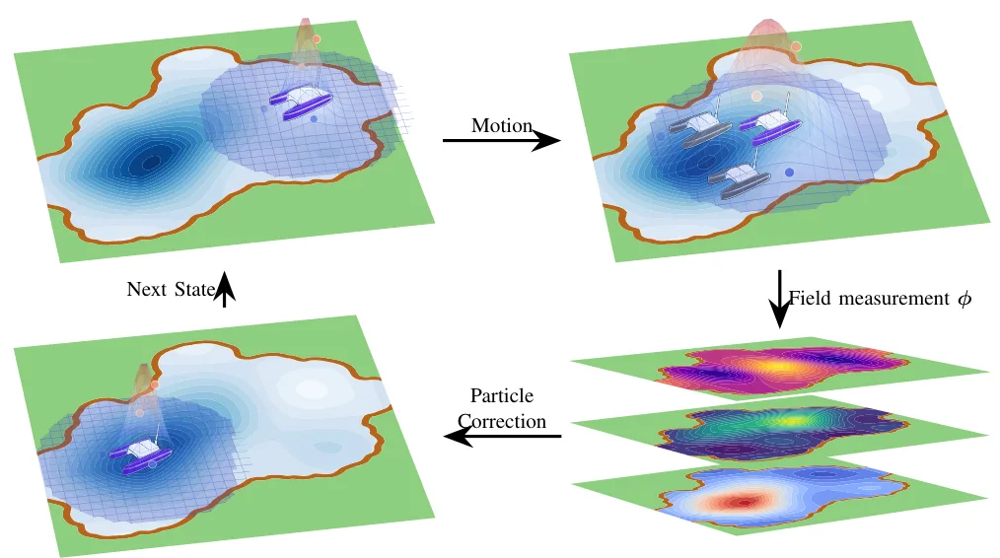
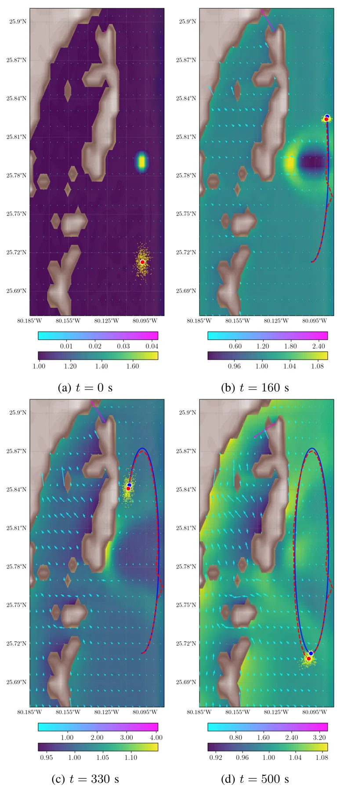
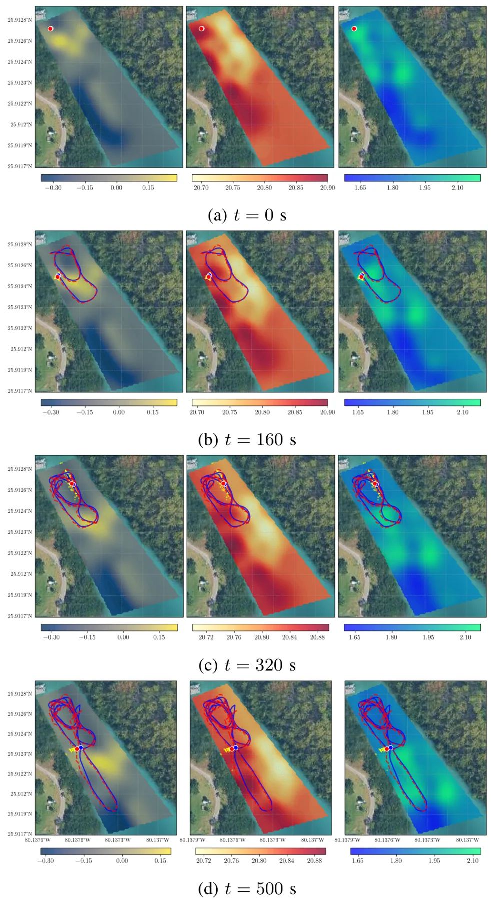
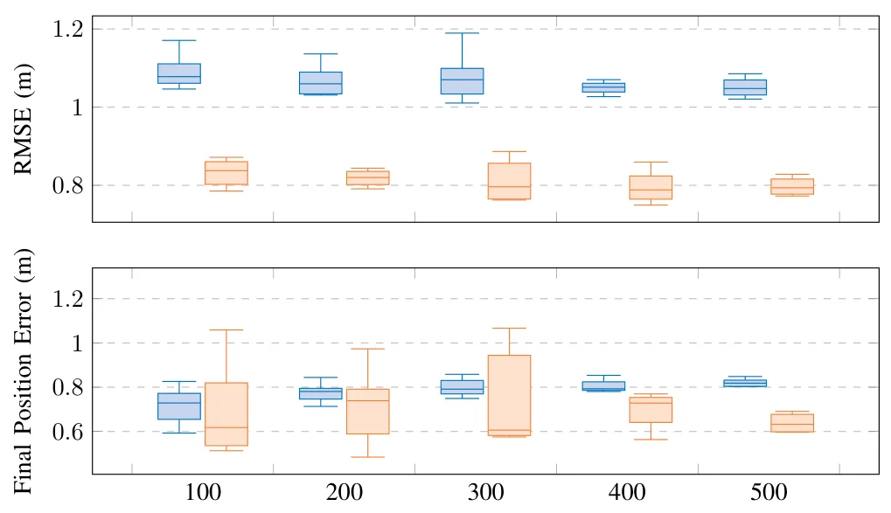
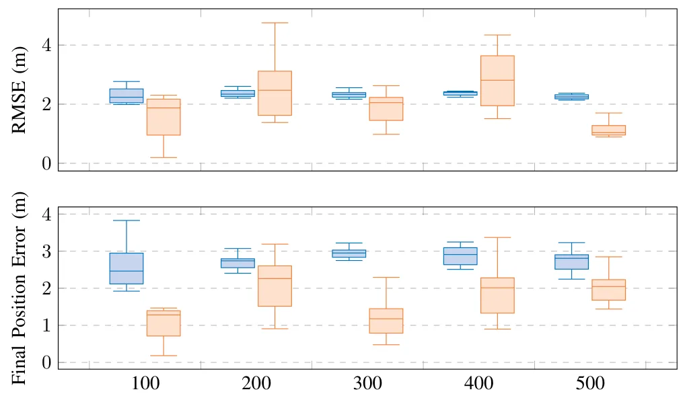
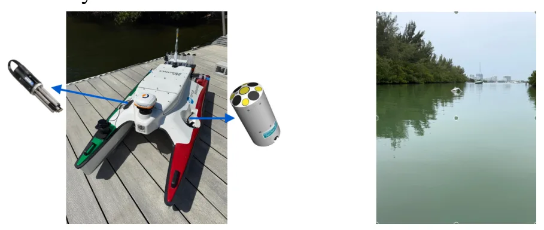
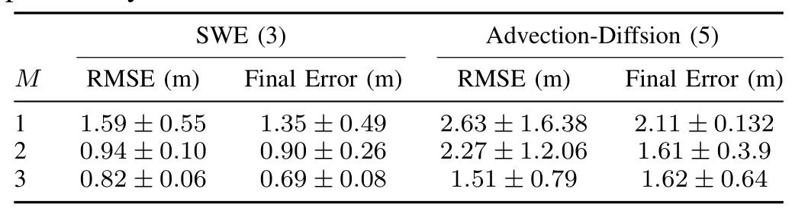

利用环境偏微分方程时空场进行定位Localization in Spatiotemporal Fields via Environmental PDEs
定位主题直接，包含多模态观测、偏置估计、粒子滤波与实船验证；与另类地图表征和 GNSS-denied 导航密切相关。
一句话工作总结
不用视觉、激光或 GNSS，而以可预测的环境场作为地图和定位指纹，并显式估计传感器偏置；适合关注水下/水面 GNSS 拒止定位的读者。
摘要
提出以受 PDE 支配的时空环境场作为定位指纹，覆盖浅水方程与平流扩散方程。数值 PDE 求解器生成区域预测场，多种环境场通道作为多模态观测融合；Rao–Blackwellized 粒子滤波器对非线性位姿采样，同时在每个粒子内用 Kalman filter 解析跟踪线性传感器偏置。仿真及自主水面艇的盐度、温度和溶解氧实验证明，这些环境场可提供实用的空间可辨识性。
This paper proposes a localization framework that uses spatiotemporal fields governed by partial differential equations (PDEs) as localization signatures. Two PDE classes are considered: the shallow water equations, which describe free-surface flows in coastal and riverine environments, and the advection-diffusion equation, which models the transport and mixing of scalar quantities such as temperature, salinity, and dissolved oxygen. A numerical PDE solver provides predicted fields over the domain, and multiple field channels are fused as multimodal measurements to improve localization accuracy. We formulate the problem within a Rao-Blackwellized particle filter (RBPF) that partitions the vehicle state into a nonlinear component sampled by particles and a linear sensor bias component tracked analytically via per-particle Kalman filters. This factorization reduces the required number of particles compared to a standard particle filter while accounting for realistic sensor drift. Simulation studies on both PDE scenarios show that the RBPF consistently outperforms a standard particle filter in terms of final position error and Root Mean Square Error (RMSE) across varying particle counts. Field experiments with an autonomous surface vehicle measuring salinity, temperature, and dissolved oxygen validate that PDE-governed environmental fields provide sufficient spatial variability for practical localization. Related experimental videos are available at https://localization-environmental-pdes.github.io/.
中文解读摘录
- 原题：Sensor Deployment Optimization for Passive TDOA Localization Under Unknown Drift Distribution
- 作者：Zhenxing Zhang, Tianxian Zhang, Zerui Zhang, Zicheng Wang, Xueting Li
- 推荐评分：8.2/10
- 核心方法：仅使用漂移误差的一二阶统计量构造广义
GDOP_D，分析传感器位置漂移对几何精度分布的重塑，并用 adaptive unidirectional PSO 求解区域最坏情形部署。 - 为何值得看：与 GNSS 站网、UWB/声学 TDOA 的鲁棒几何设计和误差传播直接相关；应进一步核查推导假设、漂移相关性和实测验证。
图表/页面预览
{kind=link}

{kind=link}

{kind=link}

{kind=link}

{kind=link}

{kind=link}

{kind=link}
